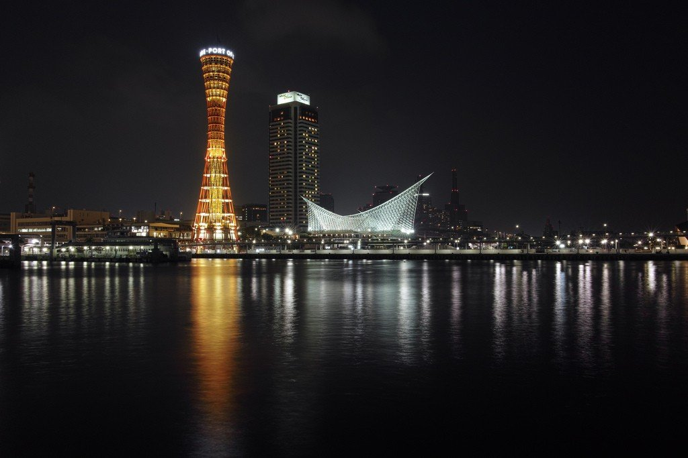
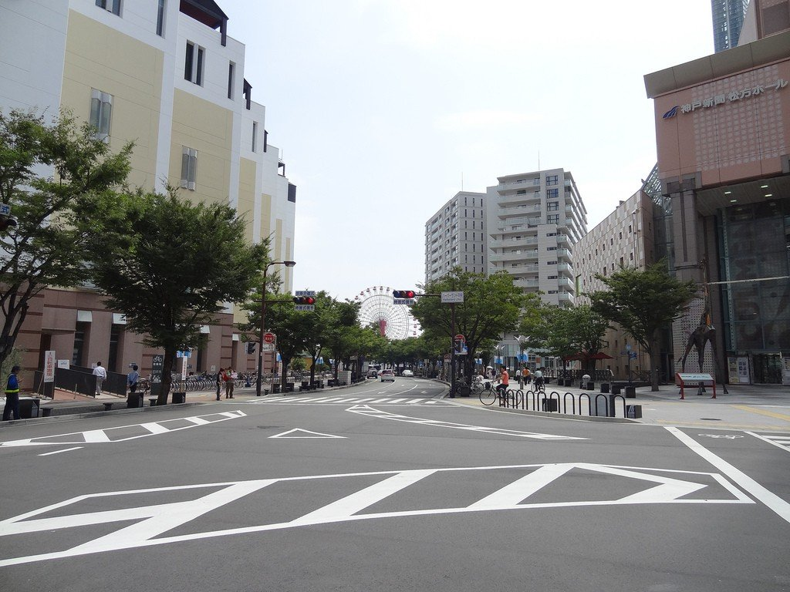
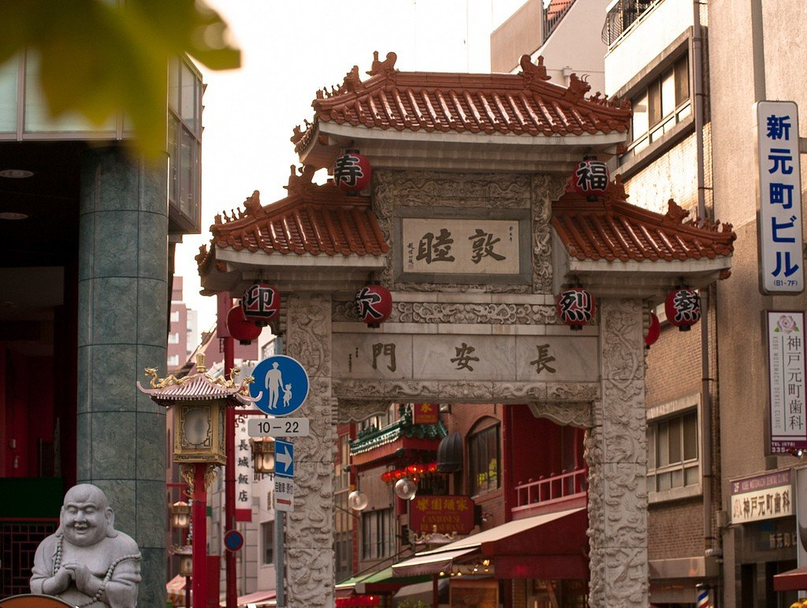
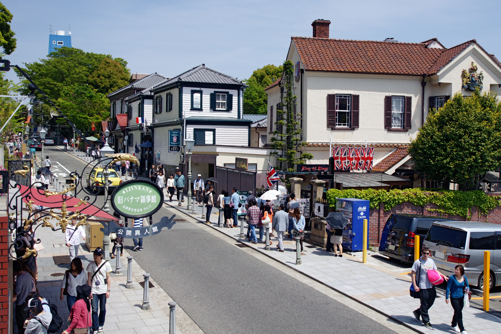
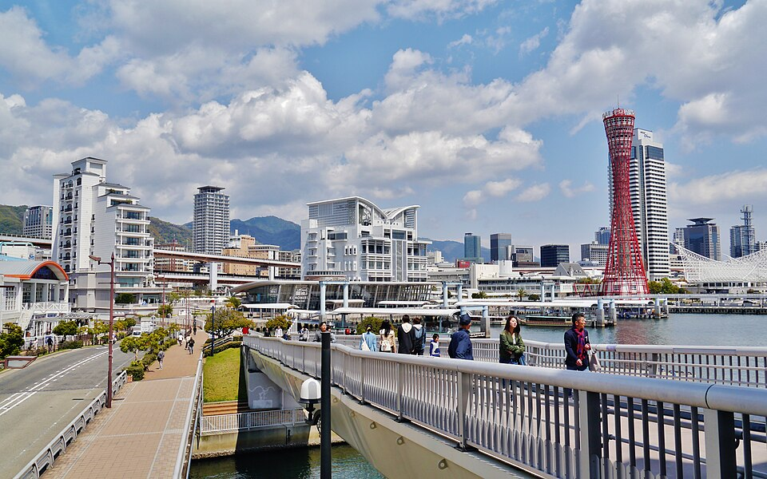
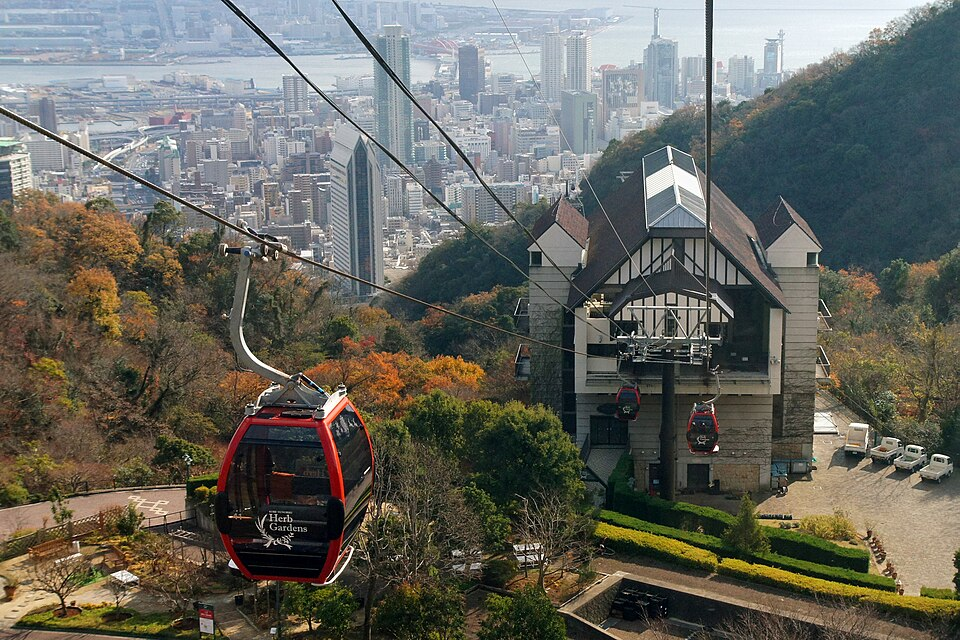

Кобе — крупный портовый город в Японии, расположенный между морем и горами. Он известен своей европейской атмосферой, развитой инфраструктурой и знаменитой мраморной говядиной. Город сочетает в себе современную архитектуру, живописные набережные и спокойствие природных ландшафтов.
Кобе – это портовый город у подножия горы Рокко, расположенный между морем и горами. Он входит в состав крупного региона Кансай и находится всего в получасе езды от Осаки, но атмосфера здесь совсем иная. Если Осака – это шумный кулинарный балаган, а Киото – тихая философия, то Кобе – это элегантный и спокойный джентльмен в европейском костюме. Город издавна был открыт иностранцам: после открытия Японии в XIX веке именно порт Кобе стал одним из первых, куда хлынули западные торговцы и дипломаты. Отсюда и то самое ощущение легкости, свободы и легкого космополитизма, которое отличает Кобе от остальных японских городов.
Кобе славится на весь мир своей говядиной. Кобэ-гигю – это мраморная говядина высшего качества, которая буквально тает во рту. Выращивают этих коров по особой технологии: их массируют, поят пивом и кормят отборным зерном. Цены на такое мясо кусаются – хороший стейк может стоить как недельный бюджет небольшой семьи. Но попробовать его хотя бы раз в жизни стоит. В городе есть множество ресторанов, где шеф-повар готовит стейк прямо на ваших глазах на огромной чугунной сковороде. Кстати, местные жители иронизируют, что туристы приезжают в Кобе только ради говядины, забывая про всё остальное, а остального в городе очень много.
Еще одна важная деталь – Кобе уцелел во время Второй мировой войны. В отличие от Токио, Осаки или Хиросимы, город не подвергался масштабным бомбардировкам, поэтому здесь сохранилось много старых зданий. Правда, в 1995 году Кобе пережил разрушительное землетрясение, которое унесло больше шести тысяч жизней и уничтожило целые кварталы. Но город восстановили с японской педантичностью и быстротой. Сегодня о той трагедии напоминает лишь несколько мемориалов и музей, а сам Кобе стал еще красивее и современнее.



Первое место, куда стоит отправиться туристу – это район Китано. Он расположен на склоне горы и представляет собой музей под открытым небом. В XIX веке здесь селились иностранные купцы и консулы, которые строили дома в стиле своих родных стран. Сегодня эти особняки (их называют «идзинкан») открыты для посещения. Каждый дом – это своя маленькая Европа: здесь и немецкий дом с остроконечной крышей, и французский с изящной лепниной, и английский с чопорным интерьером. Особенно выделяется дом Ветра (Weathercock House) с флюгером в виде петуха на крыше. Прогулка по Китано – это как путешествие во времени, когда Япония только начинала знакомиться с Западом. А с обзорной площадки у дома Ветра открывается потрясающий вид на порт и весь город.

Вторая важная достопримечательность – это порт Кобе и его набережная. Портовая зона называется Мэрикан Парк (Meriken Park), и это современное общественное пространство с газонами, лавочками и необычными скульптурами. Главный символ набережной – красная стальная конструкция под названием «Башня порта Кобе», которая напоминает гиперболоид или гигантский барабан. Рядом стоит мемориал памяти жертв землетрясения 1995 года – разорванный кусок набережной с фонарным столбом, наклоненным под неестественным углом. Контраст между веселыми туристами на газонах и этим напоминанием о катастрофе производит сильное впечатление. Вечером башня и окружающие здания красиво подсвечиваются, и набережная превращается в идеальное место для романтической прогулки.

Третье место – это парк Нунобики и канатная дорога на гору Рокко. Кобе уникален тем, что здесь можно за полчаса подняться от моря до горных вершин. Фуникулер в Нунобики – это маленький вагончик, который ползет вверх по почти отвесному склону. На промежуточной станции находится сад с фермой, где пасутся те самые коровы породы кобэ. А на вершине вас ждет смотровая площадка с видом на город, порт и Внутреннее Японское море. Особенно красиво здесь на закате, когда солнце опускается за горизонт, а город внизу начинает зажигать огни. Местные жители называют этот вид «миллион долларов», и, поверьте, он действительно того стоит.

В завершение стоит сказать, что Кобе – это идеальный город для спокойного и размеренного отдыха. Здесь нет суеты Токио или гастрономического безумия Осаки. Зато есть уютные улочки, хорошая еда и красивые виды. Выделите на Кобе хотя бы один полный день. Начните с утренней прогулки по Китано, спуститесь к порту, перекусите настоящей кобэ-говядиной (бронировать столик лучше заранее), а вечером поднимитесь на канатной дороге и посмотрите на закат. И не забудьте попробовать местное саке – в Кобе делают одну из лучших рисовых водок в Японии.